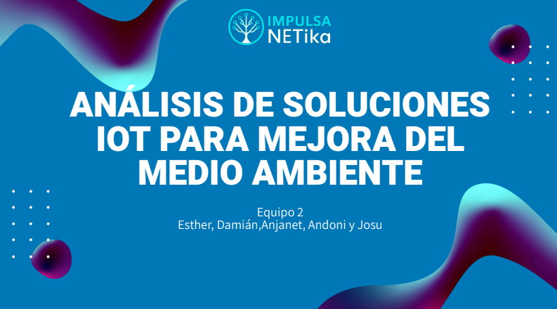
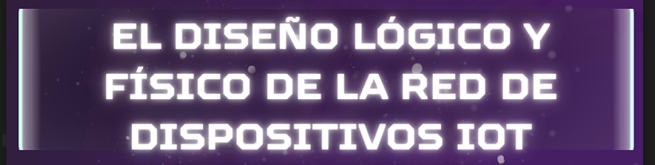

Un espacio para el crecimiento, la innovación y el emprendimiento tecnológico.
Sostenibilidad
P9- ANÁLISIS DE SOLUCIONES IoT PARA MEJORA DEL MEDIO AMBIENTE
9.1 Análisis de requisitos y selección de equipamiento

9.2 Diseño de la arquitectura de la infraestructura IoT
